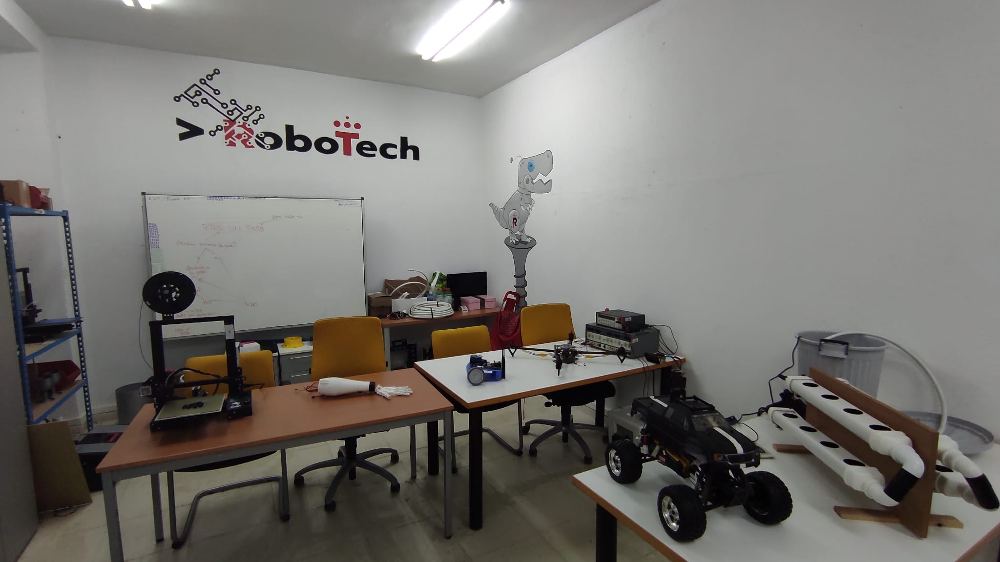
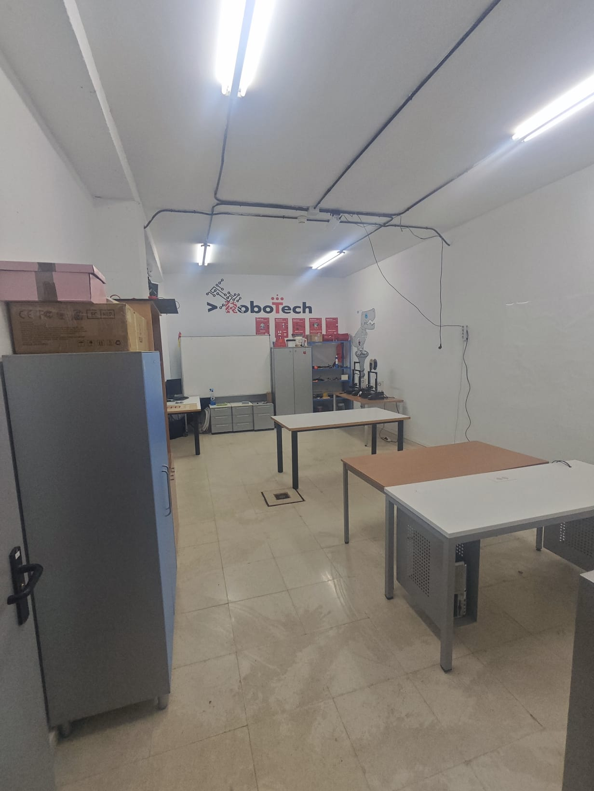

Quiénes somos
Un taller universitario para aprender construyendo.
Robotech URJC es una asociación de estudiantes de la Universidad Rey Juan Carlos centrada en robótica, electrónica, software y fabricación digital.

Nuestra forma de trabajar
De la idea al prototipo, sin quedarse solo en teoría.
La asociación existe para cubrir el espacio entre clase y proyecto funcional: planteamos objetivos pequeños, repartimos tareas, probamos piezas, versionamos código y documentamos lo que funciona.
Puede entrar gente con experiencia o desde cero. Lo importante es tener curiosidad técnica, respeto por el trabajo compartido y ganas de aprender con otras personas.
Fabricación digital
También hacemos impresión 3D.
En el local trabajamos con dos Ender 3 para fabricar piezas de proyectos, hacer iteraciones rápidas y aprender diseño pensando en montaje real, tolerancias y mantenimiento.
Ahora mismo estamos buscando financiación para dar el salto a una Bambu Lab de gama alta. Nos permitiría imprimir más rápido, con más fiabilidad y con materiales más exigentes para prototipos que hoy nos cuestan demasiado tiempo.

Conoce el local
Un vistazo al espacio donde trabajamos.

Visítanos
Pásate por el local en el Campus de Fuenlabrada.
Estamos en el sótano del Aulario I. Puedes venir a conocernos, preguntar por proyectos o ver cómo trabajamos antes de apuntarte a nada.